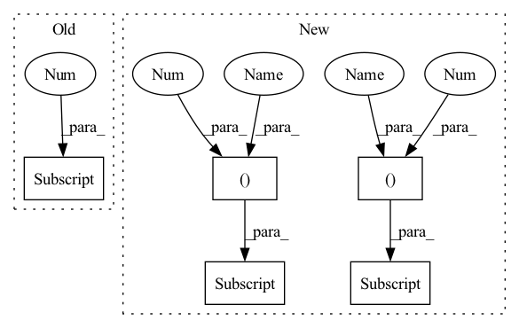

Pattern ID :1614

Before Change
y[1][..., :4] /= s[0] // scale
y[1][..., 0] = img_size[1] - y[1][..., 0] // flip lr
y[2][..., :4] /= s[1] // scale
return torch.cat(y, 1), None // augmented inference, train
else:
return self.forward_once(x, profile) // single-scale inference, train
After Change
// cv2.imwrite("img%g.jpg" % s, 255 * xi[0].numpy().transpose((1, 2, 0))[:, :, ::-1]) // save
yi[..., :4] /= si // de-scale
if fi is 2:
yi[..., 1] = img_size[0] - yi[..., 1] // de-flip ud
elif fi is 3:
yi[..., 0] = img_size[1] - yi[..., 0] // de-flip lr
y.append(yi)
In pattern: SUPERPATTERN
Frequency: 6
Non-data size: 5
Instances
Fragment ID: 6558308
Project Name: ultralytics/yolov5
Commit Name: 1d17b9af0f68ee97f9edc5f10fea51e9af9ef14e
Time: 2020-07-24
Author: glenn.jocher@ultralytics.com
File Name: models/yolo.py
M Class Name: Model
N Class Name: Model
M Method Name: forward(4)
N Method Name: forward(4)
M Parent Class: nn.Module
N Parent Class: nn.Module
M File Name: models/yolo.py
N File Name: models/yolo.py
M Start Line: 85
M End Line: 96
N Start Line: 84
N End Line: 98
'>
Before Change
y[1][..., :4] /= s[0] // scale
y[1][..., 0] = img_size[1] - y[1][..., 0] // flip lr
y[2][..., :4] /= s[1] // scale
return torch.cat(y, 1), None // augmented inference, train
else:
return self.forward_once(x, profile) // single-scale inference, train
After Change
// cv2.imwrite("img%g.jpg" % s, 255 * xi[0].numpy().transpose((1, 2, 0))[:, :, ::-1]) // save
yi[..., :4] /= si // de-scale
if fi is 2:
yi[..., 1] = img_size[0] - yi[..., 1] // de-flip ud
elif fi is 3:
yi[..., 0] = img_size[1] - yi[..., 0] // de-flip lr
y.append(yi)
'>
Fragment ID: 6558309
Project Name: wmcnally/kapao
Commit Name: 1d17b9af0f68ee97f9edc5f10fea51e9af9ef14e
Time: 2020-07-24
Author: glenn.jocher@ultralytics.com
File Name: models/yolo.py
M Class Name: Model
N Class Name: Model
M Method Name: forward(4)
N Method Name: forward(4)
M Parent Class: nn.Module
N Parent Class: nn.Module
M File Name: models/yolo.py
N File Name: models/yolo.py
M Start Line: 85
M End Line: 96
N Start Line: 84
N End Line: 98
'>
Before Change
x_ft[:, :, :self.n_modes, :self.n_modes], self.fourier_weight[0], self.fourier_weight[1])
out_ft[:, :, -self.n_modes:, :self.n_modes] = self.complex_matmul_2d(
x_ft[:, :, -self.n_modes:, :self.n_modes], self.fourier_weight[2], self.fourier_weight[3])
out_ft = torch.complex(out_ft[..., 0], out_ft[..., 1])
After Change
out_ft[:, :, :self.n_modes, :] = self.complex_matmul_x_2d(
x_ftx[:, :, :self.n_modes, :], self.fourier_weight[1])
out_ft = torch.complex(out_ft[..., 0], out_ft[..., 1])
xx = torch.fft.irfft(out_ft, dim=-2, norm="ortho")
// x.shape == [batch_size, in_dim, grid_size, grid_size]
'>
Fragment ID: 6558279
Project Name: alasdairtran/fourierflow
Commit Name: 659a21db22124687b87c0b5ab0f4afdebbf139b3
Time: 2021-07-28
Author: alasdair.tran@gmail.com
File Name: fourierflow/modules/fourier_deq.py
M Class Name: SpectralConv2d
N Class Name: SpectralConv2d
M Method Name: forward(3)
N Method Name: forward(3)
M Parent Class: nn.Module
N Parent Class: nn.Module
M File Name: fourierflow/modules/fourier_deq.py
N File Name: fourierflow/modules/fourier_deq.py
M Start Line: 112
M End Line: 126
N Start Line: 88
N End Line: 145
'>
Before Change
def forward(self, x):
// x.shape == [batch_size, n_features == 2, n_steps]
batchsize = x.shape[0]
// Fourier transform in the space dimension
// Compute Fourier coeffcients up to factor of e^(- something constant)
// x_ft"s final dimension represent complex coefficients
After Change
out_ft[:, :, :self.n_modes] = self.complex_matmul_1d(
x_ft[:, :, :self.n_modes], self.fourier_weight)
out_ft = torch.complex(out_ft[..., 0], out_ft[..., 1])
x = torch.fft.irfft(out_ft, n=N, dim=-1, norm="ortho")
'>
Fragment ID: 6558272
Project Name: alasdairtran/fourierflow
Commit Name: b89f4d2e30f60caabc38fe3b5ec45c02deca3495
Time: 2021-04-15
Author: alasdair.tran@gmail.com
File Name: rivernet/modules/fourier.py
M Class Name: SpectralConv1d
N Class Name: SpectralConv1d
M Method Name: forward(2)
N Method Name: forward(2)
M Parent Class: nn.Module
N Parent Class: nn.Module
M File Name: rivernet/modules/fourier.py
N File Name: rivernet/modules/fourier.py
M Start Line: 43
M End Line: 64
N Start Line: 33
N End Line: 55